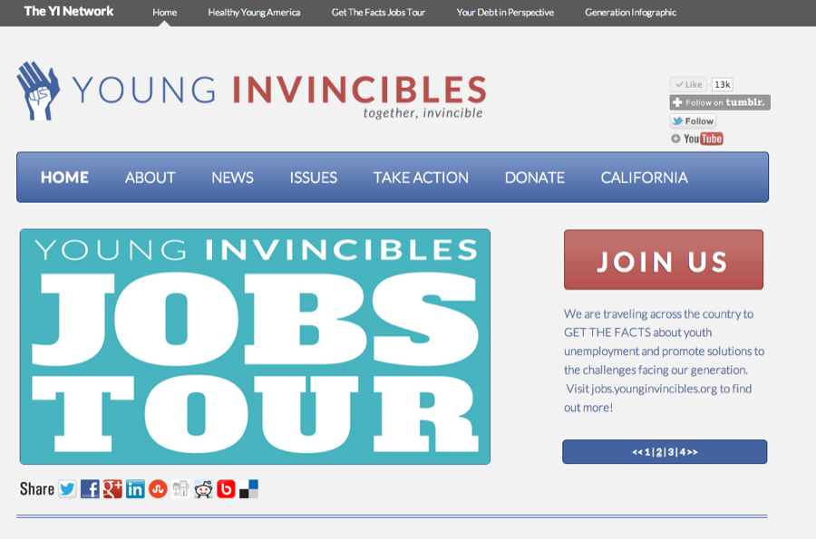
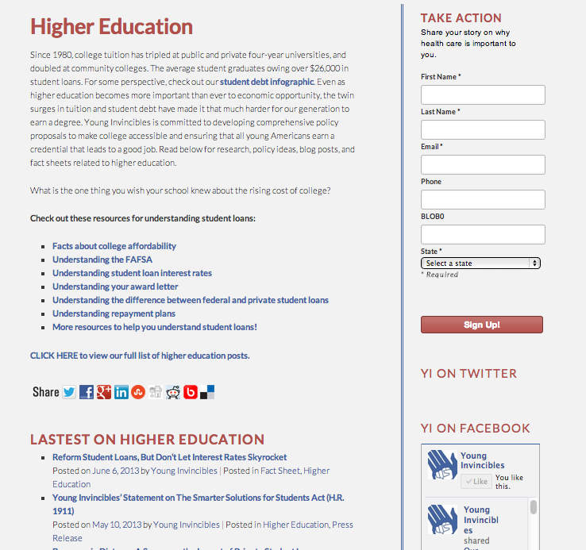
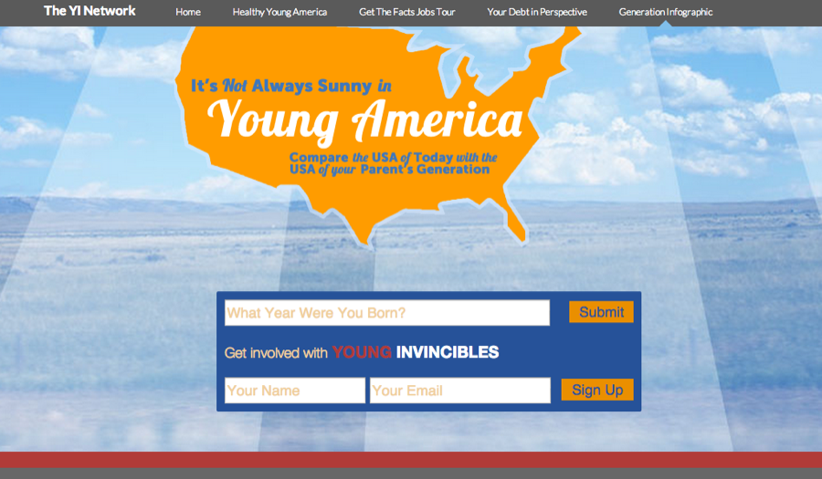
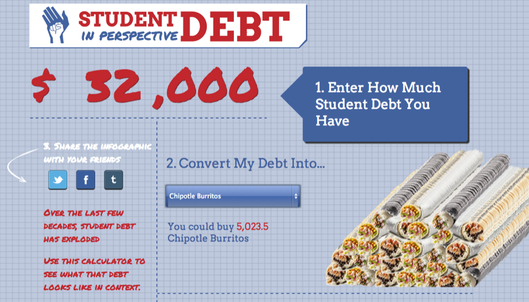

Nº 19 · Habitat III — The early internet & client work
Young Invincibles
Creating a web presence for the premier voice for young people oriented policy, with Young Invincibles.
- First observed
- 2013
- Design
- Noah Manger
Young Invincibles is a rapidly growing policy organization focused on affordable health care, student debt, and job creation for young people.
Helped them build out several campaign web sites and a full redesign of their main site. On their main site we rehauled the look and feel and organized their many content streams - from news to publications to press releases, in an easy to browse source.
Young Invincibles has also launched many interactive infographics and campaigns such as Campaign for Young America, Your Debt in Perspective, and It's Always Sunny in Young America Generational Infographic. Tying all of these properties together with the YI brand and network is the YI Bar: A menu bar which can be managed from their main WordPress site - providing consistent branding and navigation throughout their many projects.
YoungInvincibles.org is built in WordPress and utalizes the SalsaPress plugin, the infographics are each built as standalone HTML5 web apps, with a little server-side PHP code backing them up.
Plates · from the field




Field notes